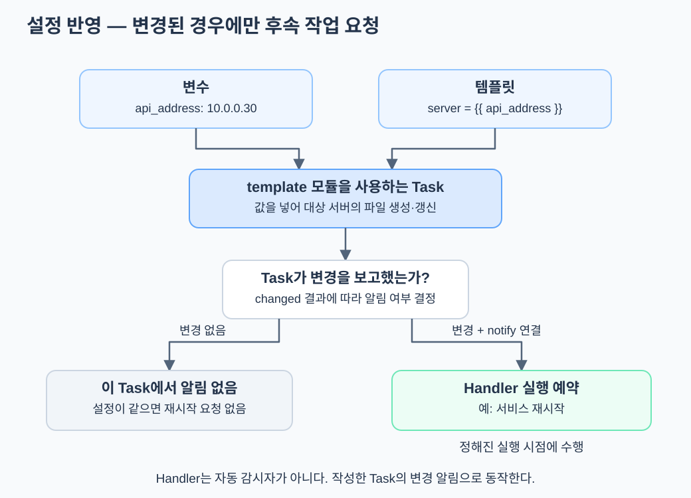

환경마다 서버 주소나 포트가 다르면 같은 설정 파일을 그대로 복사할 수 없다. Ansible은 변수와 템플릿을 결합해 실제 설정 파일을 만들 수 있다. 서비스가 설정을 다시 읽어야 하는 경우에는 별도의 작업이 필요하며, 변경 알림을 받는 Handler로 이를 연결할 수 있다.
템플릿은 값을 넣어 완성할 파일의 틀이다
다음은 특정 제품의 실제 설정이 아닌 설명용 템플릿 service.conf.j2다.
server = {{ api_address }}
port = {{ api_port }}
변수가 다음과 같다면:
api_address: 10.0.0.30
api_port: 6443
템플릿 결과는 다음 내용이 된다.
server = 10.0.0.30
port = 6443
{{ ... }}는 변수나 표현식의 값을 넣는 Jinja2 문법이다. .j2는 Jinja2 템플릿에 흔히 붙이는 확장자다. Jinja2 표현식은 템플릿 파일뿐 아니라 Ansible YAML의 변수 값에도 사용될 수 있다.
파일 생성은 template 모듈을 사용하는 Task가 수행한다
다음 Task는 실행 컴퓨터의 템플릿을 처리해 대상 서버에 설정 파일을 만든다. 실제 실행에는 템플릿과 목적지 디렉터리, 쓰기 권한이 준비돼 있어야 한다.
- name: 서비스 설정 파일 생성
ansible.builtin.template:
src: service.conf.j2
dest: /etc/example-service/service.conf
mode: '0644'
src는 템플릿 원본이고 dest는 관리 대상 서버의 파일 경로다. Role 안에서 이 작업을 작성하면 템플릿을 보통 해당 Role의 templates/에 둔다. 상대 원본 경로는 Ansible의 탐색 규칙에 따라 해석된다.
변수를 파일에 적는 단계와 이 Task가 실행되는 단계는 다르다. 파일을 저장해도 Ansible을 실행하지 않으면 대상 서버에 반영되지 않는다.
Handler는 변경이 발생했을 때의 후속 작업이다

설정 파일을 갱신했지만 실행 중인 서비스가 이전 설정을 계속 사용할 수 있다. 다음은 파일 내용이 바뀐 경우에만 서비스 재시작을 요청하는 설명용 Play다. 실제 서비스 이름과 경로는 배포할 프로그램에 맞춰야 한다.
- name: 서비스 설정 반영
hosts: app_servers
become: true
tasks:
- name: 설정 파일 생성
ansible.builtin.template:
src: service.conf.j2
dest: /etc/example-service/service.conf
mode: '0644'
notify: 예시 서비스 재시작
handlers:
- name: 예시 서비스 재시작
ansible.builtin.systemd_service:
name: example-service
state: restarted
Task가 changed를 보고하면 notify가 같은 이름의 Handler를 알린다. 변경이 없으면 그 Task에서는 알림을 보내지 않는다. Handler는 보통 일반 작업 뒤의 정해진 실행 시점에 수행되며, 같은 Handler가 여러 번 알림을 받아도 해당 실행 시점에는 한 번 실행된다.
서비스 재시작이 필요한지, reload로 충분한지, 아예 후속 작업이 없는지는 작성자가 판단해야 한다. Handler가 모든 서비스의 설정 변경을 자동으로 감지하는 것은 아니다.
Kubespray 변수도 코드의 입력이다
Kubespray v2.32.0에서 외부 API 로드밸런서를 사용하려면 다음과 같은 변수를 제공할 수 있다.
loadbalancer_apiserver:
address: 10.0.0.30
port: 6443
loadbalancer_apiserver_localhost: false
이 변수는 이미 준비한 로드밸런서의 주소를 설치 코드에 전달한다. HAProxy를 새로 만들거나 VIP를 VM에 붙이는 명령이 아니다.
해당 버전은 loadbalancer_apiserver가 정의돼 있는지 확인해 API 주소를 결정한다. 변수가 없으면 기본적으로 로컬 API 프록시를 사용하는 구성을 선택하도록 작성돼 있다. 정의되지 않은 변수에 대한 대체 동작은 Ansible이 임의로 만드는 것이 아니라 Kubespray 코드에 구현된 동작이다. 필수 변수를 처리 없이 참조하면 오류가 날 수 있다.